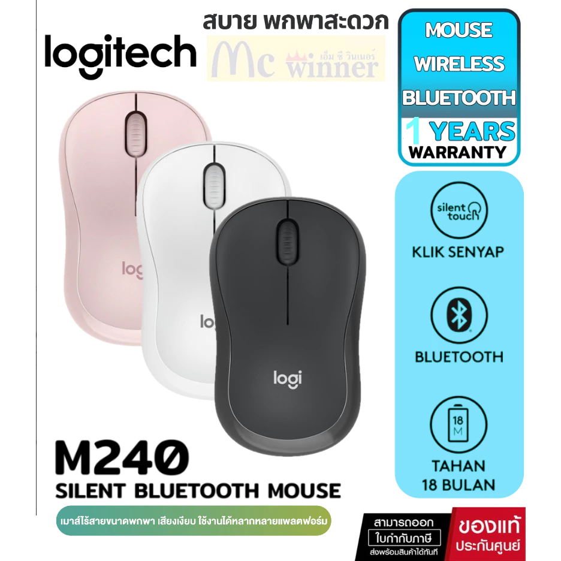

เลือกซื้อเมาส์ไร้สายยังไงให้ตรงกับการใช้งาน เมาส์ไร้สายราคาไม่เกิน 500 บาทมีให้เลือกเยอะมาก แต่แต่ละรุ่นเหมาะกับการใช้งานต่างกัน ก่อนซื้อควรเช็ค 4 เรื่องนี้ให้ครบ
การเชื่อมต่อ Bluetooth vs USB Dongle — Bluetooth ไม่กินพอร์ต USB เหมาะกับ Notebook ที่พอร์ตน้อย ส่วน USB Dongle (2.4GHz) หน่วงน้อยกว่าและจับคู่ง่ายกว่า เหมาะกับคนที่มีพอร์ต USB เหลือDPI (ความไวเมาส์) — งานพิมพ์เอกสารทั่วไปใช้ 800-1200 DPI ก็พอ ถ้าต้องขยับเมาส์เร็วบนจอความละเอียดสูงหรือทำกราฟิก ควรเลือกรุ่นที่ปรับ DPI ได้สูงกว่า 1600ระยะเวลาแบตเตอรี่ — เมาส์ไร้สายส่วนใหญ่ใช้ถ่าน AA/AAA อยู่ได้หลายเดือนถึงเป็นปี ให้เช็คสเปคระยะเวลาใช้งานต่อการเปลี่ยนถ่าน 1 ครั้งเสียงคลิก — ถ้าประชุม Video Call บ่อยและใช้ไมค์ในห้องเดียวกับเมาส์ ควรเลือกรุ่นที่มีเทคโนโลยี Silent Click ลดเสียงคลิกดังรบกวนดูแลรักษาเมาส์ให้ใช้งานได้นาน เปลี่ยนถ่านก่อนหมดสนิท เพราะเมาส์บางรุ่นจะเริ่มขยับกระตุกหรือหน่วงตอนแบตใกล้หมด ทำความสะอาดเซนเซอร์ด้านล่างเมาส์เป็นระยะด้วยผ้าแห้ง ฝุ่นเกาะเซนเซอร์จะทำให้เคอร์เซอร์กระตุกหรือขยับไม่นิ่ง ใช้บนแผ่นรองเมาส์หรือพื้นผิวด้าน หลีกเลี่ยงพื้นผิวมันวาวหรือกระจกที่เซนเซอร์ Optical อ่านค่าไม่แม่นยำ เก็บ USB Dongle ให้ดี ถ้าทำหายเมาส์รุ่น Bluetooth-only จะยังใช้ได้ แต่รุ่นที่พึ่ง Dongle อย่างเดียวจะใช้งานไม่ได้เลย หลีกเลี่ยงการทำเมาส์ตกกระแทกบ่อยๆ ปุ่มคลิกด้านในเป็นกลไกที่สึกหรอได้จากแรงกระแทกสะสม DPI เท่าไหร่ถึงจะพอ (Mouse DPI Guide) DPI (Dots Per Inch) คือค่าความไวของเซนเซอร์เมาส์ ยิ่งค่าสูง เคอร์เซอร์ยิ่งขยับเร็วเมื่อขยับเมาส์ระยะเท่ากัน ไม่ใช่ว่ายิ่งสูงยิ่งดีเสมอไป ต้องเลือกให้พอดีกับงานและขนาดจอที่ใช้
800-1200 DPI — พิมพ์งาน เอกสาร Excel ท่องเว็บทั่วไป บนจอ 21-24 นิ้ว ความละเอียด Full HD1200-1600 DPI — ใช้จอ 27 นิ้วขึ้นไปหรือจอ 2K/4K ต้องขยับเคอร์เซอร์ข้ามจอกว้างบ่อย1600+ DPI — ใช้จอ 4K หรือจอหลายจอต่อกัน ต้องขยับเมาส์ระยะไกลบนพื้นที่หน้าจอกว้างมากเมาส์ในบทความนี้ส่วนใหญ่ปรับ DPI ได้ 800-1600 ครอบคลุมการใช้งาน WFH ทั่วไปได้ครบแล้ว ไม่จำเป็นต้องซื้อรุ่นที่ DPI สูงเกินความจำเป็นถ้าไม่ได้ทำงานกราฟิกหรือเล่นเกม สรุปเร็ว ถ้าไม่อยากอ่านทั้งหมด รุ่น ราคา เด่น เหมาะกับ Logitech M240 Silent Bluetooth Mouse 409 บาท คลิกเงียบ 90% Bluetooth WFH ประชุมบ่อย LOGITECH M185 WIRELESS MOUSE 310 บาท แบตอึด รับประกัน 3 ปี ใช้งานทั่วไป NEOLUTION E-SPORT ILLUSION WIRELESS MOUSE 279 บาท 4800 DPI เบา 57g เล่นเกมงบน้อย NUBWO-X MOUSE WIRELESS NM-098 BLACK 390 บาท Dual Mode ชาร์จได้ คนชอบ wireless ครบ Rapoo รุ่น M10 Plus 2.4GHz Wireless Optical Mouse Black 239 บาท ถูกสุด ใช้ได้จริง งบจำกัดสุด
เปรียบเทียบทีละรุ่น 
วางรูปสินค้าที่นี่ '">
1 Logitech M240 Silent Bluetooth Mouseราคา Shopee: 409 บาท
รุ่นใหม่ของ Logitech ที่ใช้เทคโนโลยี Silent Touch ลดเสียงคลิกได้ถึง 90% เหมาะกับคนทำงาน WFH ที่ประชุม video call บ่อย ไม่อยากให้เสียงคลิกรบกวนไมค์
การเชื่อมต่อ Bluetooth ปุ่ม Silent Touch ลดเสียง 90% ดีไซน์ ถนัดมือทั้งซ้าย-ขวา รับประกัน Logitech ข้อดี
เงียบจริง ไม่กินพอร์ต USB แบรนด์น่าเชื่อถือ กระทัดรัด ข้อเสีย
ใช้ BT ล้วน เครื่องที่ไม่มี BT ต้องซื้อตัวรับเพิ่ม เหมาะสำหรับ: คนทำงาน WFH ที่ต้องการความเงียบและความน่าเชื่อถือของแบรนด์
ดูราคาล่าสุดบน Shopee →